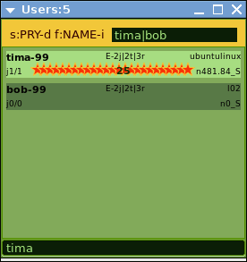

★CGRU★
|
|
★CGRU★ |
|
To open users list in a separate window uses RMB on 'RENDERS' button.
RMB Menu
|

|
Tooltip
|
Sort&Filter Control
|
★ signs a running task.
tima-99 User 'tima' has a priority = '99'.j8/1 Jobs number: 8 total / 1 running.
h-1/17 User took '17' hosts of '-1' maximum ('-1' means no limit).
E-2b|2t|3r Jobs Errors Default Settings:
For jobs blocks to avoid host = '2'.
For blocks tasks to avoid host = '2'.
Automatic task errors retries = '3'.
n1138.9_S
User need.
|
Users Separate Window  |
You can open users list in a separate window (RMB on 'RENDERS' button). This is an example of users list filtered by name |
| SourceForge.net Project |
★CGRU★ |
Раздел на форуме CGTALK.RU |